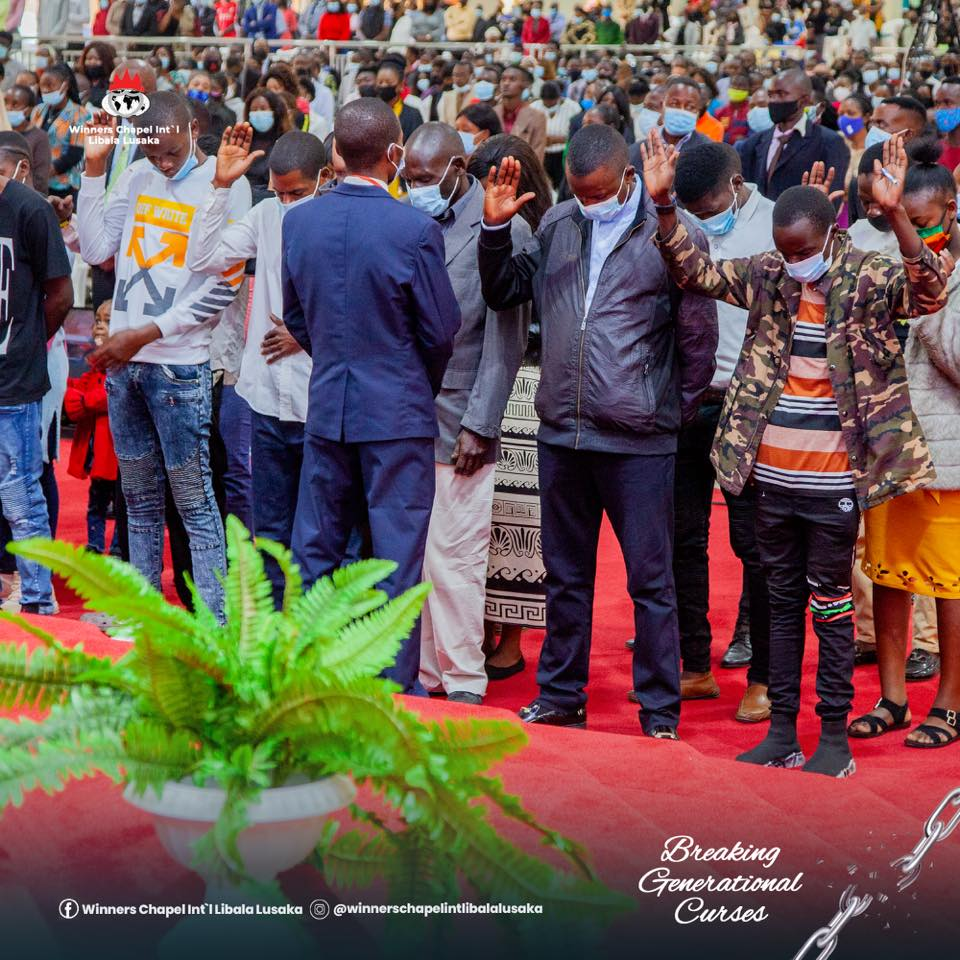
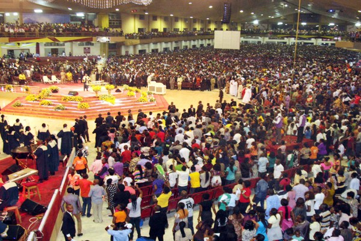
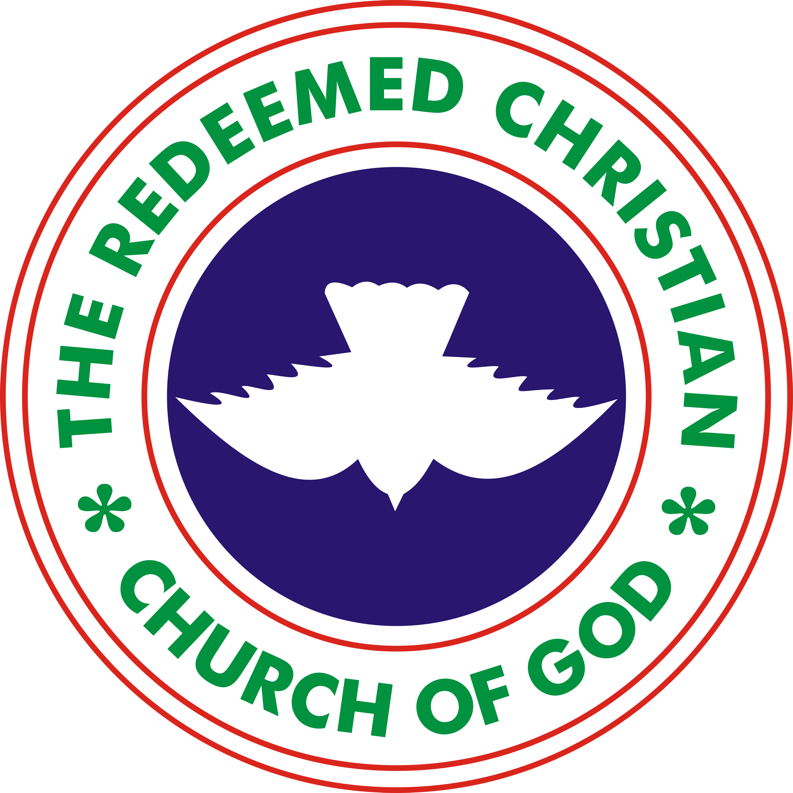

"MORE THAN A CONQUEROR"
Shiloh is the annual prophetic gathering of Winners worldwide for a feast of the Word, where we access our inheritance in Christ until the land is subdued before us, both as a Church and as individuals.
Please contact us for more information on the up-coming program
2021 SHILOH ANNUAL SERMINAR
See some of the recent annual serminars
Shiloh is the annual prophetic gathering of Winners worldwide for a feast of the Word, where we access our inheritance in Christ until the land is subdued before us, both as a Church and as individuals. This prophetic platform has been validated over and again.
-

Shiloh 2020
-

Shiloh 2019
Ministry Partners
- 